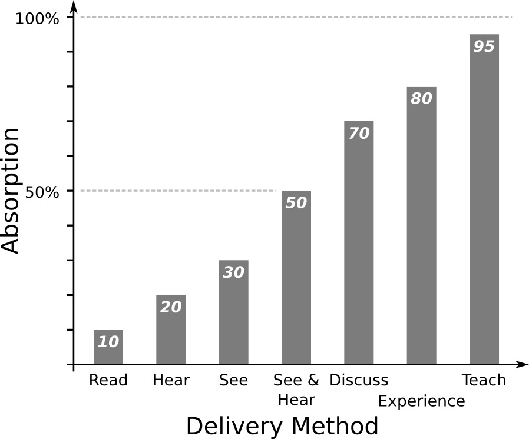
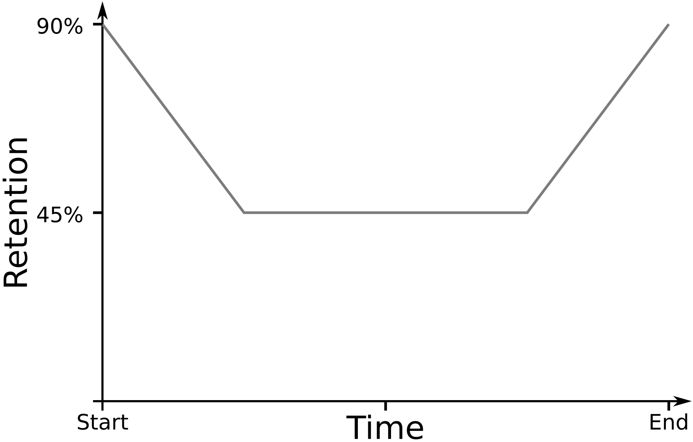
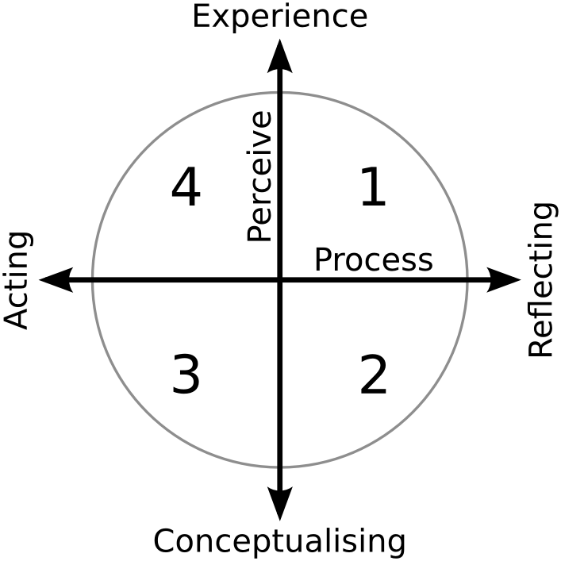

class: center, middle, title .header[ .header-left[<img height="70px" src="http://www.latrobe.edu.au/__data/assets/image/0011/545987/logo.png"/>] .header-right[] ] <!-- SETUP --> # Training the Trainer ## A tale of two roles ??? Imagine a world where ,ALL Scientists, are ,competent, Bioinformaticians ... where they are as comfortable using an HPC as a wet lab This is a tale of where I ,thought, I would be a teacher, yet ended up doing more learning. --- # Problem Evil HPC Usage ??? Scientists, unwittingly doing all sorts of evil to our HPC. --- # Workshop #1 Intro to Unix ??? * Took Bernie's course, WOW * Old notes (background reading) * Question sheet * Answer <!-- CONFRONTATION --> --- # Critical Reflection Important What/Why? Many Sources ??? * Learners are #1 * Very important to improve your course * WHAT happened and WHY did it happen Many forms * Q the LEARNERS during session * Survey afterwards * Discuss co-FACILITATORS --- # Results Lost ↔ Love it Constructive Feedback ??? * Engagement/success very polarised * loved or hated it 3 common feedback * Introduction presentation * Lost between Questions, Notes and Answers sheets * More time --- # Introductory Presentation ??? But how to do make this presentation effective? --- # No Assumptions From Zero Terminology Start Slowly ??? * Try to remember back before you knew topic * Need to explain all new terminology * Start slow and give an easy win --- # 6x4 Rule 6 points 4 words Maximum ??? MAX * 6 points * 4 words It's best to discuss the items Otherwise ADULT Learners think "I can READ myself" Distracts learners from listening --- # How we learn .center[  ] .ref[[1] William Glasser] ??? * READ 10% hence previous slide * EXPERIENCE 80% great, workshops it is * TEACH 95%, why you should pair up --- # Primacy and Recency .center[  ] ??? 30 to 60 seconds to grab someones attention Leave audience with a strong message Challenge to use knowledge gained Test: what was the first thing I said today? --- # 50/50 engagement Why? ??? Not totally explained by lack of INTRO --- # Learning styles .leftcol[ 1. Why 2. What 3. How 4. [What] If ] .rightcol[  ] .ref[☆ McCarthy's 4MAT model] ??? 2 continuums: * How they like to perceive the information * How they like to process it 4 types: * WHY is it so? * WHAT do I need to do? * HOW does it work? * WHAT IF I changed this? * Often find that learners will start question with the name of their type * **Spread around all** styles to gain maximum engagement. --- # Workshop Changes Think → Help → Answer Re-word Questions Smooth Learning Curve .spacer[] <div class="showable-container question showable-hidden" id="showable0"> <div class="showable-inner"> <div class="showable-header question" id="showabletitle0"> <span class="link-like" id="showablelink0">What is the Answer to Life?</span> </div> </div> </div> <div class="showable-container hint showable-hidden" id="showable1"> <div class="showable-inner"> <div class="showable-header hint" id="showabletitle1"> <a href="#7" id="showablelink1">Hint</a> </div> <div class="showable-body hint" id="showablebody1"> <p> What is the answer to everything? </p> <p> As featured in <em>"The Hitchhiker's Guide to the Galaxy"</em> </p> <div class="showable-container showable-hidden" id="showable2"> <div class="showable-inner"> <div class="showable-header" id="showabletitle2"> <a href="#7" id="showablelink2">More</a> </div> <div class="showable-body" id="showablebody2"> <p> It is probably a two digit number </p> </div> </div> </div> </div> </div> </div> <div class="showable-container answer showable-hidden" id="showable3"> <div class="showable-inner"> <div class="showable-header answer" id="showabletitle3"> <a href="#7" id="showablelink3">Answer</a> </div> <div class="showable-body answer" id="showablebody3"> <p> <strong>Answer</strong>: 42 </p> <p> Ref: <a href="http://en.wikipedia.org/wiki/42_%28number%29">Number 42 (Wikipedia)</a> </p> </div> </div> </div> ??? * Took Bernie's approach of Think > Help > Answer and "put it in their face" by including all 3 in one document * Re-worded an handful of questions to cater for other learning styles * Smoothed learning-curve particularly at the beginning --- # Workshop #2 Intro to Unix 2.0 ??? What changed: * 30min pres * No homework (before) * 2.5h (still) <!-- RESOLUTION --> --- # Success Why? ??? Only **small changes** led to huge **improvement** --- # The Accidental Game Game-like learning Accept failure .ref[[1] www.instituteofplay.org/about/context/why-games-learning] ??? If learners perceive work to be a game they will accept failure more and be more persistent --- # The Challenge Scientist ⇌ Bioinformatician ??? I leave you with this challenge .., to turn every Scientist into a Competent Bioinformatician,, one exciting workshop at a time.